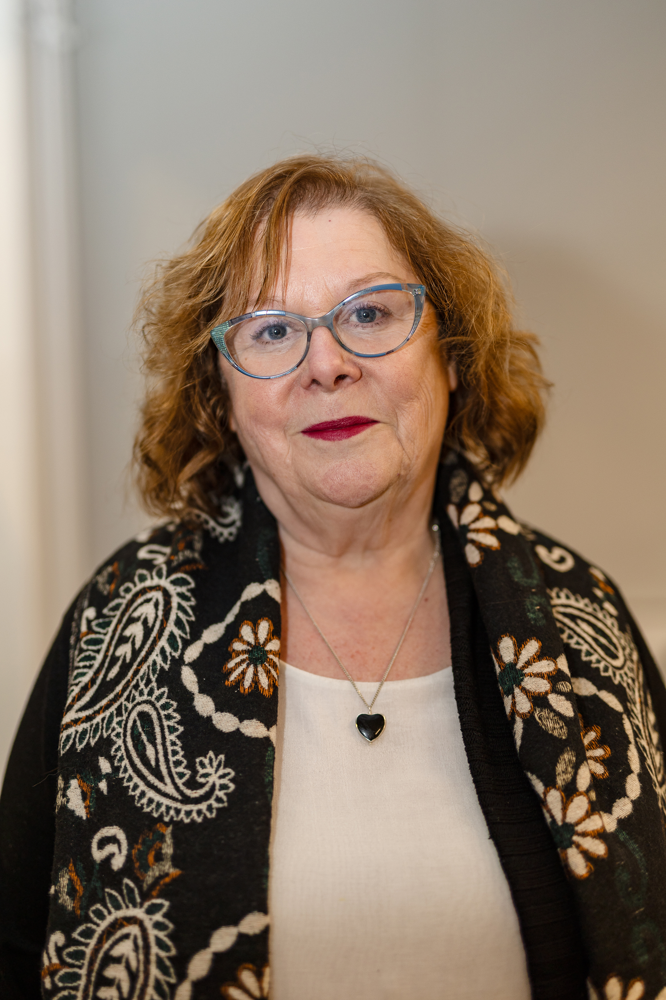
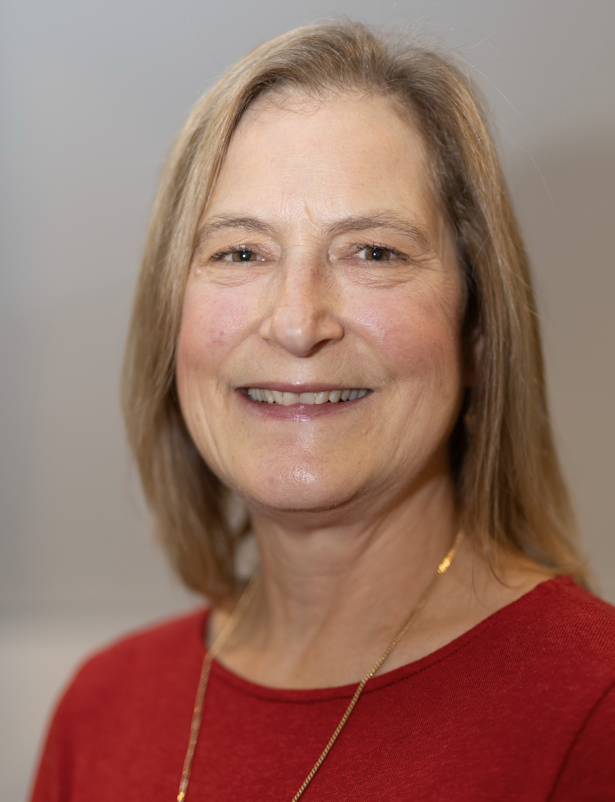
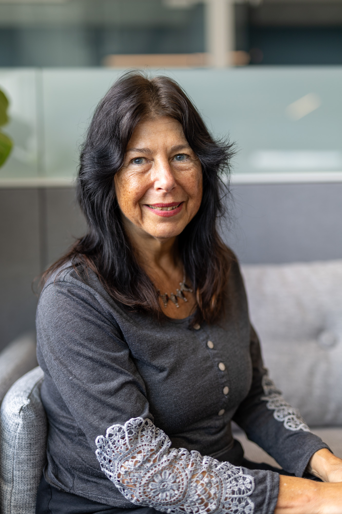
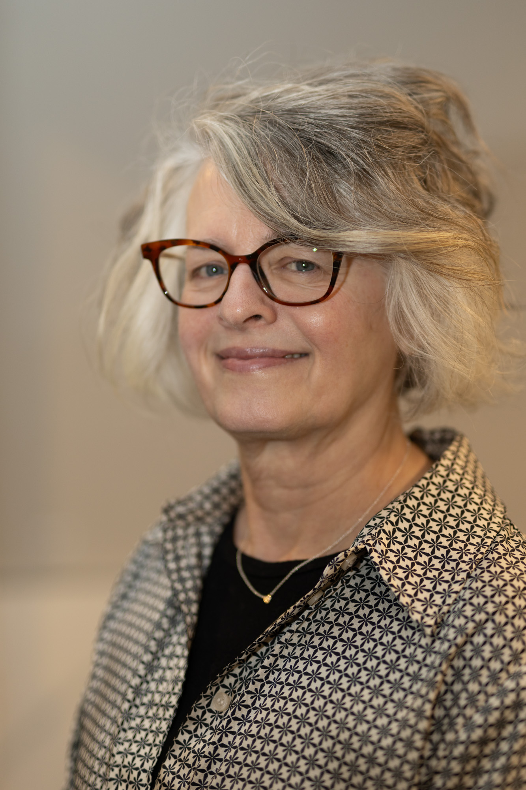
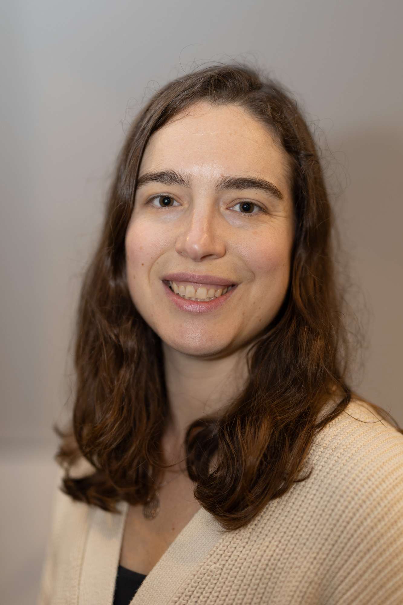
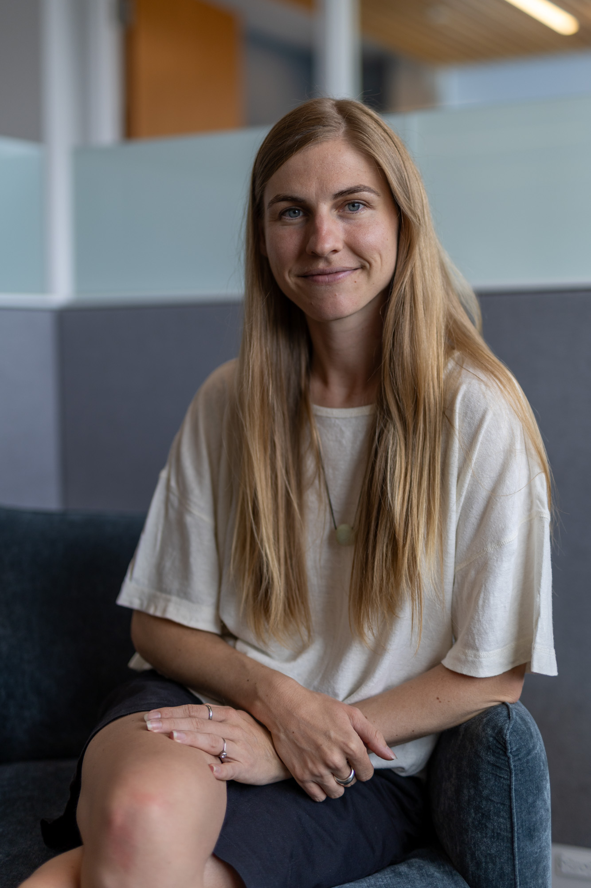
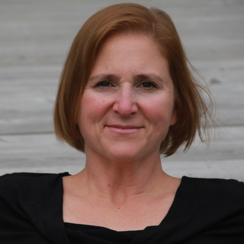
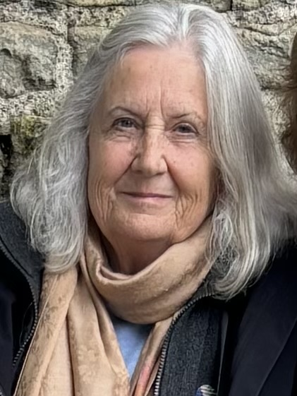

About Us
The Vancouver Grief Society is led by board members and facilitators who bring personal and professional experience in grief, bereavement, education, and community support.
Our Board

Ann Caulfield
PresidentAnn's experience with deep grief began with the loss of her husband in 2010. Several years after his death she happened on a flyer for the Lower Mainland Grief Recovery Society and decided to take one of the organization's grief groups. Like many who have participated in a group she found the experience uniquely supportive of her grief. Encouraged by that experience she undertook training and then became a facilitator for the organization in 2014. In 2019 Ann joined the board as facilitator liaison and in 2022 she was elected president. In addition to her board and facilitating responsibilities, Ann also co-facilitates with sister organizations and she serves as a grief educator in the community. To augment her understanding of the complexity of grief and bereavement she has completed a death and grief studies certification under the guidance of renowned grief educator Dr. Alan Wolfelt at the Center for Loss and Life Transition in Fort Collins, Colorado. Ann is a bookkeeper and administrative assistant. In her spare time she enjoys cooking for and entertaining her family and friends, attending as many Canucks games as possible, and enjoying Vancouver's rich live music scene. She calls North Vancouver home, where she shares her life with the irrepressibly enthusiastic Cooper, her golden retriever.
Morgyn Chandler
SecretaryOriginally hailing from Victoria, Morgyn is a managing partner of the Vancouver firm Hammerco Lawyers LLP, where she practices personal injury law, bringing civil claims on behalf of survivors of sexual assault. Because she frequently works with people who are suffering trauma, loss, and grief, Morgyn continually seeks to better understand these issues. By educating herself and her colleagues, she brings to survivor work a deep understanding of how loss and grief can affect a person's emotional, psychological, and physical well-being. Because she also believes deeply in the importance of supporting those who support people in grief, Morgyn gravitated to the VGS in 2013. Serving as board secretary, she brings to the organization her incisive intelligence and unflappable calm efficiency. In her spare time Morgyn loves to hike with her dogs, play tennis, and travel. An accomplished cook and baker, she is currently practicing to become a contestant on The Great Canadian Baking Show.

Delores Beier
TreasurerDelores Beier is new to the Vancouver Grief Society but not to grief. In 2017 she lost her beloved husband of 25 years to illness. In an online course, "Writing Your Grief," she found support and an inkling of how to carry her grief forward. A serendipity was her meeting Karen Parrish and through that friendship, Delores is happy to become associated with VGS. Now retired, Delores spent 30 years in IT management at a leading Canadian restaurant company where she wore many hats including designer, educator, developer, and project manager. She volunteers with several organizations including the Eagle Ridge Hospital Foundation and Union Gospel Mission. She is a lover of music, language, travel, and her tight circle of family and friends. Her superpowers include her ability to survive a multi-week trip with just carry-on luggage and an uncanny talent for zeroing in on the funniest, most kind-hearted person in the room. Delores lives in Port Coquitlam where she fends off all suggestions that she should get a cat.

Chris Newell
Facilitator LiaisonChris is a native Vancouverite who has lived in various areas in the Lower Mainland for over 60 years. Chris's first career as a personal coach and career specialist allowed her to help hundreds of people with transition and loss. Following the death of a friend to suicide in 2005, Chris intentionally began to learn about grief and bereavement. In 2008 she became a VGS facilitator, then over the years helped to develop numerous educational materials and refine the organization's internal processes. Chris served as board president from 2015-2022. Currently she has multiple roles in the organization. In addition to serving as board member, grief group facilitator, and facilitator liaison, she also conducts grief education in the society's Grief Education Workshop and in community workshops and presentations. Chris's far-ranging interests in art, music, writing, and nature have led her into activities as diverse as stand-up comedy and magic, rock and jazz singing and archery. As a lifelong learner and practitioner, she brings energy and insight to her work on the board and compassionate wisdom to those in deep grief.

Karen Parrish
Community Relations & CommunicationsKaren is a poet, freelance writer, and editor. Born and raised in Florida, she moved to Boston in 1978 and then with her young family to Vancouver in 2004. In 2019 she lost her husband of 36 years to illness. Karen found tremendous support in VGS grief groups and in 2022 trained to become a grief group facilitator. She has served on the VGS board since 2024, overseeing community relations and communications. In 2023 she served as writer-in-residence at the Joy Kogawa House in Vancouver, where she developed grief haikus and prose into a haibun manuscript of life with her husband, his death, and her ensuing grief. In the fall of 2025 she served as one of seven Citizen Poets for the City of Vancouver, talking with residents about grief and loss and weaving their stories into a single found poem that resides in the city's audio archive. Karen is passionate about writing poetry, sitting with others in grief, U.S. political history, and discovering new visual artists and musicians. She lives in Vancouver, where she takes long forest walks, hikes the north shore mountains, plays tennis, gardens, and is humored by her two adult children.
Our Facilitators

Jen Chapman
Jen is a sustainability professional who is passionate about holistic approaches to sustainability that consider the wellbeing of individuals, communities, and ecosystems. Born and raised in Vancouver, she came originally to the VGS as a participant in a grief group following the sudden loss of her father. There in the group she felt held and understood in a way that was transformative for her grief. Having such support was so positive she trained to be a grief group facilitator in 2024. Jen wants to help others find a safe space for their grief, to feel understood by those who have walked a similar path in grief, and to learn tools to help in navigating grief. She is passionate about being on the water and will do pretty much anything - kayaking, sailing, rowing - that gets her out on it. When Jen isn't engaged in those activities you can find her practicing yoga, cooking, reading, and catching up with friends and family.

Bianca Guthrie
Born in South Africa, Bianca immigrated with her family to Canada when she was a child. A wardrobe and props stylist for 10+ years, Bianca is today a clinical counsellor with a particular interest in working with adults navigating grief, early childhood trauma, or questions about identity. Bianca's work in the grief space initially grew from her desire to make sense of her own losses, then developed over the years as a touchstone for engaging in a variety of creative, academic, and spiritual processes. In 2019 she took the Society's Grief Education Workshop and then trained as a facilitator. She loves being a part of the VGS community and considers it a privilege to support others in their grief journey.

Dr. Catherine Hajnal
The bulk of Dr. Catherine Hajnal's career has been facilitating an understanding of trauma, loss, and grief as well as their transformative potential. Well-being and empowerment have been core themes in her work. Wanting to honor her own losses, Catherine first connected with VGS by taking the Grief Education Workshop in 2013. This work inspired her to train as a facilitator and to serve for several years both in that role and as a board member. Today she considers herself "retired and working when she likes," continuing her affiliation with the VGS by occasionally teaching the Grief Education Workshop. She is appreciative the Society has embraced her new status and is open to hearing about her e-bike riding adventures, one of her favourite activities in retirement.

Carolyn Main
Carolyn was born and raised in England, where she trained and worked as an elementary school teacher. Teaching in Australia introduced her to the Canadian geologist whom she would marry. Working together in Australia and then New Zealand, the couple moved to Canada in 1977. Carolyn lost her mother when she was 13 and her husband died unexpectedly in 1997. Those deaths, together with family members experiencing chronic illness and disability, led her to bereavement work, and in 2001 she undertook VGS facilitator training during a counselling practicum at Burnaby Hospice. Over the years she became a VGS board member, where she served as facilitator liaison and then president, facilitating grief groups and teaching several Grief Education Workshops. As facilitator Carolyn often heard participants asking "what's next?" following the end of their group. Spurred by that need, in 2019 she began hosting a monthly grief circle in her home, open to anyone who'd completed a VGS support group. The group shifted to zoom during COVID and still runs today, with Carolyn as a co-facilitator. Now entering her 80th year, Carolyn serves as the institutional memory of the Society, bringing her wit and wisdom and seemingly infinite good cheer to every encounter. She lives on a 2.5-acre property on Bowen Island with her son, daughter, son-in-law, and granddaughter, where she reads, listens to music, gardens, and helps take care of the chickens.
Our History
Our history section is still being developed with input from Carolyn Main and Kathy Schretlen. A fuller history will be added here as that draft is finalized.